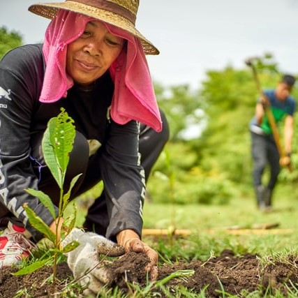

ABOUT
This web application project will aid a group of youth leaders as ADMIN in tracking, monitoring, and upgrading several community projects of Brgy. Batia, Bocaue, in the province of Bulacan.
An application that enables various stakeholders to upload relevant and timely digital content that eventually will enhance research databases and search engines. It also also help community leaders to adapt computer technologies that can enhance online project monitoring, audit, review, and data sharing.